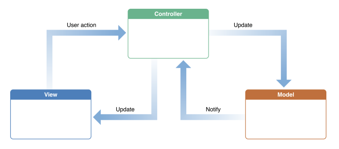

Introduction and XCode
1. Introduction
2. Course Map
3. Pitch Perfect Overview
4. Creating A Hello World Swift IOS App
-
AppDelegate.swift listens to system events such as when you app starts, when you get a memory warning, or When your app sent to the background. It creates a ViewController object when it notices that your app has launched.
The ViewController object is responsible for setting up the view described in Main.storyboard and showing it on the screen to the user -
ViewController.swift controls and manages a View.
-
Main.storyboard describes the views and app flow and is the view that the ViewController class manages.
- Reference
5. Tour Of Xcode
6. Document Outline In Xcode
7. XCode Shortcuts
Xcode has numerous keyboard shortcuts that are worth learning. Knowing them can help speed up your iOS development, and it saves you from having to reach over to the mouse or trackpad.
On the Navigator Panel on the left side, the following keyboard shortcuts cycle through the different navigators.
- ⌘ + 0 = Show or Hide the Navigator Panel
- ⌘ + 1 = Project
- ⌘ + 2 = Symbol
- ⌘ + 3 = Find
- ⌘ + 4 = Issue
- ⌘ + 5 = Tests
- ⌘ + 6 = Breakpoint
- ⌘ + 7 = Report
The Utility Area on the right side of Xcode can also be toggled with the following keyboard shortcuts:
- ⌥ + ⌘ + 0 = Show or Hide the Utility Area
- ⌥ + ⌘ + 1 = File Inspector
- ⌥ + ⌘ + 2 = Quick Help Inspector
- ⌥ + ⌘ + 3 = Identity Inspector
- ⌥ + ⌘ + 4 = Attributes Inspector
- ⌥ + ⌘ + 5 = Size Inspector
- ⌥ + ⌘ + 6 = Connections Inspector
If you right click (control click) on the Storyboard in the editor, then you can select a zoom level. You can also use 2 finger pinch in your Mac's trackpad to zoom in and out of the Storyboard.
8. Introduction To The MVC Pattern

Resource: Apple documentation